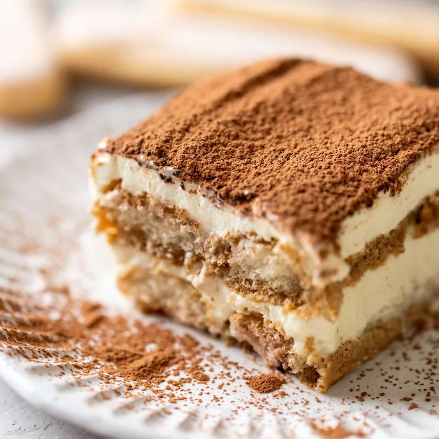

Slow Cooker Glazed Carrots

Ingredients
- 2 lbs carrots peeled and sliced into 1/2” pieces
- 1/4 cup butter, melted
- 1/3 cup brown sugar
- 1/2 tsp salt
- 1/4 tsp cinnamon
- 1/8 tsp nutmeg
- 1 tablespoon chopped parsley
Directions
- Place the carrots in a slow cooker. In a small bowl, whisk together the butter, brown sugar, salt, cinnamon and nutmeg.
- Pour the brown sugar mixture over the carrots and toss to coat.
- Cook on HIGH for 3 hours or until carrots are tender. If you'd like to thicken the glaze, remove the cover and cook on HIGH for an additional 15 minutes. Sprinkle with parsley and serve.